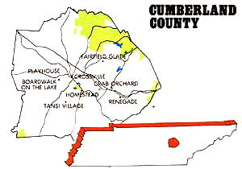
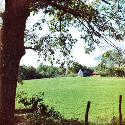
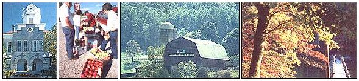

Tennessee's Cumberland Country
Fourth in a series on the best sections in North America in which to pursue a rural lifestyle, including rich resources, industry and employment, health and recreation, treasures from the New Deal, low prices, wages and crime.
By Sara Pacher
March/April 1987
Photographed by John Bryson
Here's the fourth in a series on the best sections of North America in which to pursue a rural lifestyle.
When Ohio-born Mike Moser moved-via Minnesota and Alabama-to Crossville, Tennessee, to become editor of the 101-year-old Crossville Chronicle, he was impressed by the friendliness of the people.
"I was told," Mike says, "that when folks say `good morning' to you, they really mean it-and it's true! About a year later, I was truly amazed at their generosity. You see, I met another `outsider'-a girl from Georgia, who worked for the city-and, since we had no family here, we planned a quiet wedding. However, some local women with whom I was barely acquainted decided to give us a big beautiful wedding at the state park, with the mayor officiating. That's the kind of people you'll find on the Cumberland Plateau."
The natives here refer to it as living "up on the mountain," and, indeed, the roads leading up the escarpments of the immense Cumberland Plateau do appear to be headed for the top of the world. Once there, the traveler is greeted by a green, undulating landscape rich with streams, waterfalls, wild gorges, and hillsides covered with hardwood forests that have long been a source of income for the region.
The Cumberland Plateau, the largest timbered plateau in America, is a segment of a great upland that extends from western New York to central Alabama. In Tennessee, it is made up of 14 beautiful counties which sit at an average of 2,000 feet above sea level, but our pick-gently rolling to hilly Cumberland County (pop. 33,200)-is the most prosperous. Crossville (pop. 7,000), the county seat and largest urban area, is centrally located in eastern Tennessee just off Interstate 40, about 75 miles from Knoxville and 120 miles from Nashville.
Rich Resources
So attractive is this 679-square-mile county that a number of large residential resort developments have invested heavily here, and it was chosen as the fourth best place in the United States to retire by Rand McNally's Places Rated Retirement Guide.
One of its attractions is climate, for it is blessed with long springs and autumns, cool summers, and mild winters. July temperatures range from a high of 82°F to a low of 64°. In January, highs average 39° and lows 21 °, and the county's annual 12 inches of snow usually guarantee a white Christmas. It has a 180-day growing season and an annual rainfall of 52 inches, which makes irrigation unnecessary-except during last summer's record drought. Even then there was plenty of water, for the county sparkles with more lakes and ponds than you can find anywhere else in Tennessee.
Cumberland is rich in other resources. Crab Orchard stone, a beautiful sandstone in colors of tan, brown, blue, pink, gray and variegated-is found only within a 50-mile radius of the little community of Crab Orchard (pop. 1,065) in the southeastern part of the county. Several companies quarry, cut, and ship this Tennessee quartzite all over the world for buildings, floors, patios, and swimming pools. Many county homes and public structures are made of this durable material, and even the oldest still retain a new look in Cumberland's unpolluted air.
Once, buffalo and other game made the plateau an Indian hunting ground. North Carolina's legislature cut the region's first road through Crab Orchard Gap in 1785 to connect the state with Nashville. Thomas M. Clark founded Crab Orchard, the oldest settlement in the county, in 1796, and the inn he built in the early 1800s served travelers until it burned in 1929. Another inn, the 1880 Hotel, still stands, and its present owners are restoring it. In the meantime, its art and antique shop is open to the public.
Even before travelers through the mountains were safe from Indian attacks, Crab Orchard, named for its wild crab apple trees, was a campground and resting place for pioneers moving west. An early settler wrote, "The ground is yellow with crab apples in the fall, and the air sweet with their scent in the spring."
Today, Crab Orchard is the site of a large limestone mine. The Cumberland Plateau also has coal, gas, and oil deposits, but surrounding counties have exploited these resources (sometimes, as in the case of open-pit coal mining, with ugly results) more than Cumberland has, and, recently, high costs and low prices have made production unprofitable.
Cumberland Crops
Though the soil that rests on top of Cumberland's mineral wealth is not ideal, you can grow almost any temperate-climate crop in a home garden. While the earth is well drained and loamy, it's also strongly acid and low in natural fertilizers. Local farmers compensate by planting a lot of nitrogen-fixing legumes. Over 12,000 of the region's acres are sown in snap beans, and-because two plantings a year are possible-Cumberland County ships nearly one-fourth of the nation's commercial supply of this crop.
Both blueberries and muscadine grapes like Cumberland soil.
Raising feeder calves and pigs is also big business, and cattle, as well as famous Tennessee Walking Horses, graze on rich green pastures, creating beautiful, bucolic scenes all over the county. Late spring frosts make fruit growing a little risky, but apples with a "special flavor" have long been raised in the area. (When President-Elect Andrew Jackson passed through Grassy Cove, one of the area's early-settled, picturesque valleys, on his way to Washington, he distributed apple seeds to some of his admirers. One of these was John Ford, Sr., who had settled in the valley in 1801, and his resulting tree produced light green, medium-large apples with a pinkish blush and a tart taste ideal for applesauce and pies. Before a windstorm finally blew the tree down in 1903, it had been grafted onto other area seedlings, which became known as Jackson apple trees.)
Blueberries thrive in the area's acid soil, and grapes, particularly the native fox and muscadines, also do well. The Highland Winery in Fentress County just to the north was the first winery established in Tennessee in modern times, and its world-class wines won the International Medal of Quality in Madrid in both 1983 and 1984-but you'll have to visit the winery to taste and buy them. Even then, you probably won't be able to buy any of its famous muscadine wine. There's a waiting list for this coveted vintage.
Cumberland farmers have been particularly fortunate to have two University of Tennessee experimental research stations in the county that work to reduce to a minimum the use of chemical fertilizers in this generally infertile soil in an effort to prevent water contamination. Researchers are also experimenting with new plowing methods to lessen topsoil loss; crossbreeding livestock that will better meet the needs of the market; running stress tests on piglets to prevent losses during transportation; and testing crop varieties that will thrive in this particular area. The agricultural interests of the county are further reflected in a large, energetic 4-H Club camp.
Industry and Employment
In recent years, a large textile manufacturer in the county closed down, creating economic hardship in an area that has had more than its share of such suffering throughout its history. There are, however, in addition to the sandstone and limestone producers mentioned earlier, 40 industries in the county, and the region is becoming increasingly attractive to companies worldwide. A number of these are unique. Hickory Specialties uses scraps from the hardwood industry to make liquid-smoke flavoring for meat. It was the first company Jack Daniels allowed to use its name. Now, Hickory's Jack Daniels Charcoal has increased in both popularity and price.
Crossville Ceramics, a European company that uses a secret process to manufacture a very hard tile for heavy traffic areas, such as airports, just opened a mufti-million-dollar plant, centrally located between the North Carolina rock and Tennessee clay used in its tile.
When Crossville resident Cosby Harrison crashed his light plane, it took him 90 days to find the parts needed to repair it, so he started Trade-A-Plane Magazine. This boomed into a number of other trade publications which now employ 65 people.
Other operations are small but notable. For example, for 30 years, some people have made a special trip to Crossville to pick up some rounds of justifiably famous low-moisture cheddar from Simonton's Cheese House. Though this very personable, family run operation carries many other types of cheese and gourmet items, 30,000 rounds of its own cheddar are sold each year through its retail outlet and by mail order.
The biggest moneymaker for the county, however, is tourism, and the biggest civilian employer is Fairfield Glade, the flagship of the vast Fairfield Communities resort/residential development company and Tennessee's only Mobil four-star resort. This 12,000-acre complex has a convention center, a shopping center, 11 lakes, two indoor and 10 outdoor tennis courts, horseback riding trails, indoor and outdoor pools, three restaurants and lounges, and three golf courses (one of which was named the best new resort course in the U.S. by Golf Digest) with another under construction. Similar communities surround Crossville. Lake Tansi Village to the south has one of Tennessee's largest manmade lakes (550 acres with 14 miles of shoreline); a smaller and newer resort, Boardwalk on the Lake, is to the west; and, to the east, there's Renegade, a 9,000-acre development on the top of Crab Orchard Mountain, which has recently been purchased by a West German group. This spring, it's changing its name to Cumberland Gardens, and-in addition to a ski area, a spectacular new golf course, and the other usual amenities-it plans to develop a compound of world-class show gardens.
Health and Recreation
Such resort developments are a driving force in Cumberland's economy, and the large retirement-age population they've lured to the area has attracted a number of physicians. As a result, there is approximately one doctor for every 800 people. The county also has a fine 256-bed hospital, and the Uplands Retirement Community incorporates the 62-bed Wharton Nursing Home.
On the other hand, the large resorts were initially resented by many of the native-born, since they took over some prime hunting land. There's still enough left, however, to attract thousands of hunters each year. One of the main destinations is the Catoosa Wildlife Management Area. Founded in 1942, this 78,000-acre wildlife reserve is one of the largest in North America with annual hunts (including archery and black-powder hunting) available under the watchful eye of the Tennessee Game and Fish Commission. Here you'll find deer, quail, wild turkey, grouse, and wild boar. The very rare red-cockaded woodpecker and other birds also make the area a first-rate bird-watching site during nonhunting seasons. The commission has also introduced river otter into the Obed Wild and Scenic River, which was added to the National Park System in 1976. (To prevent any contamination of the river, the city of Crossville built a new sewage treatment plant that makes the water flowing out of it as pure as the town's drinking water.) There are also private hunting preserves in the region. Caryonah, Tennessee's oldest and largest, offers hunters game birds, Babiroussa and Corsican ram, wild goats, mouflon, and the county's famous wild boar, which is actually a cross between the Russian wild boar and the southern razorback.
And, obviously, with all the rivers, creeks, lakes, and ponds, fishing-particularly for smallmouth and largemouth bass-is a popular pastime.
Less than an hour away to the north is one of the nation's newest public playgrounds: Big South Fork National River and Recreation Area. It will eventually encompass 123,000 acres of heavily forested, extremely rugged terrain in Tennessee and Kentucky with over 80 miles of prime canoeing waters, as well as whitewater rafting and hiking and horseback trails. Though the plan is to keep The Big South Fork primarily a wilderness area, future site development includes a partial refurbishing of the Blue Heron mining community, the restored grist mill of Alvin York (the Sergeant York of World War I fame), and the historic community of Rugby, a utopian settlement created in the last half of the nineteenth century by English author (Tom Brown's School Days) and social reformer Thomas Hughes, for the younger sons of English gentry.
Treasures From the New Deal
Just a few miles south of Crossville, the countryside is dotted with quaint, two-story stone houses that-except for some recent additions-all look similar. They were the result of the Homestead Act passed during the depression of the 30s. A part of Franklin Roosevelt's New Deal-and of particular interest to his wife, Eleanor-this act gave poor families the means of acquiring land.
In Cumberland, 29,000 acres of cut-over timberland were divided into small farms of five to 50 acres. The Steaders, as they were called, had to have good character and a rural background. The purpose was not only to give people a chance to own a farm, but also to create jobs and job skills. In creating the Homesteads Community, the Steaders were trained to be carpenters, stonecutters, and even electricians-since the homes were designed for all the then-modern conveniences, like electric stoves-as well as to utilize ancient crafts and skills. In these houses, therefore, you'll find hand-split shingles, real pine paneling, hand-hewn beams, and handwrought hardware for the doors and andirons for the fireplaces. The furniture was even made in a Steaders' factory, as were the cotton mattresses.
Some undeveloped land still sells for $100 an acre.
First to be built, however, was a family's barn, in which they lived while their house was constructed. Farm animals and tools were also provided by the government. (In addition, these homesteaders were often told what to grow, though this paternalistic attitude and the inevitable corruption on the part of some administrators often created resentment among the settlers.)
The community was also provided with a large, stone, steam-heated schoolhouse that was far superior to other county schools and still serves as a public elementary school. The nearby stone administrative building with a water tank/fire tower is now the Homestead Museum, run by Emma and Doyle Varden, children of some of the original homesteaders. (Doyle is a renowned artist, whose pen-and-ink drawings of country scenes are on display there.) Across the road, you'll find the nationally famous Cumberland General Store, which provided the community with the implements of self-sufficiency. Today, recently introduced computers keep up with the thousands of orders that come in from all over the country for many of the same products-calico, corn shellers, mule bits, pocket watches, cedar churns, wind chargers, washboards that were so popular and necessary many years ago.
Though newer houses are scattered among the stone cottages, many of the original families still occupy their homes and are considered an asset to the cultural life of the county. In fact, the Homestead area is one of the most desirable and (outside the resort communities) more expensive areas in the county in which to live.
Nearby Cumberland Mountain State Park (1,780 acres) was acquired in 1938 as a project of the Farm Security Administration to provide a recreational area for the 252 families selected to homestead in that sparsely populated section of Tennessee. It was developed by the Civilian Conservation Corps (CCC), the Works Progress Administration (WPA), and the American Friends Service Committee (AFSC), and contains the Crab Orchard stone dam and bridge, which was the largest masonry structure built by the CCC. Most of the other buildings are also made of this famous sandstone, and the park offers cabins, camping, swimming, boating, fishing, and other forms of recreation. (An Olympic-size swimming pool should be open next summer, and swim meets will most likely be held here.) The park's pretty restaurant overlooking the lake should also be mentioned, for it serves lunch and dinner year-round, and its lunch menu includes an enormous, extremely tasty buffet for only $3.99. When I marveled at the magnificent feast one could get at that price, I was reminded that in some Crossville restaurants you can get a meat and three vegetables for only $2.99.
Low Prices, Low Wages, Low Crime
Residents from most other areas of the United States will be constantly amazed at the bargains, particularly in real estate, to be found here. Some undeveloped land still sells for $100 an acre, and good farmland can be found for $300 or $400 an acre. Even on the highly commercial strip that leads from Interstate 40 to downtown Crossville, an acre can be bought for around $900, and it's not at all uncommon to find a three-bedroom, two-bath house for under $40,000though the old Homestead houses with a few acres of land will probably be priced in the $60,000 or $70,000 range. The asking price for a brick, three bedroom"executive" house with a swimming pool was $83,500, and a small two-bedroom home on five acres with a 160-foot well was advertised for $9,000. Fifteen acres with a farmhouse, barn, well, and city water was going for $25,000-and real estate prices in the other counties of the Cumberland Plateau are some 15070 to 20070 less expensive. (Though the cost of drilling a well runs from $5.50 to $6.50 a foot, it can be a risky proposition. The underground sandstone rests in layers, like stacked lumber, and finding a sufficient pocket of underground water is sometimes costly. For this reason, city water is available in many rural parts of the county.)
Taxes, too, are reasonable. Property taxes in the county are $2.93 per $100 value, $1.55 in the city of Crossville, and the ratio of assessment for residential property is 25070. There is no school tax and no state personal income tax. However, Tennessee does have a 5'/2°10 sales tax, and Cumberland County tacks another 2'/4070 on top of that.
There's a reason for these reasonable prices. Wages are low (the per capita income in 1984 was $7,765, compared to $18,400 nationwide), and the annual unemployment rate is high (11.8070). It might drop to 8070 in summer, but goes up to 19070 or 20070 in winter, when tourism falls off.
Despite this, crime is not rampant. According to the sheriff's department, there were four rapes, seven robberies, 41 assaults, 150 burglaries, 27 auto thefts, and no criminal homicides in Cumberland County from September 1985 to September 1986. In Crossville itself, in the first 10 months of 1985, there were no homicides, one rape, one robbery, 22 assaults, and 76 burglaries with a 59070 recovery rate, which is well above the national average.
An Educational Dilemma
Both natives and newcomers are so delighted with this region it's practically impossible to find anyone with anything negative to say about it. They will, however, acknowledge one problem area: There is an over 50070 illiteracy rate in the county. It's blamed on the economic hardships the area experienced in past years, when people had to drop out of school to work in factories in order to survive. Even today, there is a nearly 50070 high school dropout rate, due largely to teenage pregnancies.
To counter this, the public school system, which has fine physical facilities, has set up an adult literacy program for people 16 or older to teach basic skills from the fourth level down and an adult basic education program for those needing help from the fifth level up. There are also adult vocational night classes in such things as computer information, pre-law enforcement, accounting, and interior decorating, and a public alternative school has recently been set up for those students with learning and social problems. In addition, there are small private schools in the county run by the Quakers and the Mennonites. (At Muddy Pond, just over the county line in Fentress County, a large and friendly Mennonite community, famous for its beautiful crafts and homemade bread and cookies, keeps to the "old ways" of farming and has earned the respect of the local population.) Tennessee Tech is 30 miles away at Cookeville, and it's only an hour's drive to the University of Tennessee in Knoxville.
The arts and handicrafts thrive in this rural area.
One should note, too, that the Cumberland County Chess Club, begun in 1972 and now with chess classes on every level in the public schools, has won many state and regional team championships and produced the national junior champions in 1982. (It's not unusual to see children deep in their chess games at the 14,000volume Art Circle Public Library, which was formed by a group called the Art Circle in the 1800s.) The school system has a good arts program, and any child would be fortunate to have access to the Cumberland County Playhouse, which is designated as a Major Cultural Resource by the Tennessee Art Commission and which attracted over 55,000 people to last season's performances.
It was founded in 1965 as a community theater, after Paul Crabtree-an actor/writer/composer/director/producer-moved from California to his wife's hometown of Crossville to write a book. In the meantime, he helped the school produce a lavish production of The Perils of Pinocchio, and the citizens were so enchanted they formed a corporation and sold stock in order to build the playhouse. A few years later, it became nonprofit and has grown into Tennessee's largest professional theater-but the County Playhouse has never forgotten the needs of the county's children.
Paul Crabtree died in 1979, but his wife, Mary, is still extremely active in its productions, and their oldest son, Jim, is the current producing director. Its Children's Creativity Center offers recreational drama and performing arts classes (there is a charge only for dance lessons), and the center, in association with the Tennessee Arts Commission and the Cumberland County School System, recently hired a Director of Education to develop and execute a drama curriculum in the public schools and to coordinate the center's programs with the playhouse's goals.
In addition, if a child wants to be in a playhouse production, he or she won't be denied the chance. For example, in the recent, spectacular production of Peter Pan, the eight "lost boys" the script called for were increased to 26 (a task in directing and choreography that was done so well, you would swear these talented children were old-time professionals).
The playhouse also finds inspiration from the area's local history, producing-among other things-original musicals based on such subjects as the Homesteaders and Andrew Jackson ("Old Hickory") in its Living History Series.
This is a land of many churchesone nudist camp
The People
Creative talent has always abounded in this region, which was originally settled by the Scotch-Irish from Virginia and North Carolina. It expressed itself primarily in crafts such as woodcarving and quilting, and today the best of such craftspeople can't produce enough to fill the demand. Some of this talent can be seen every Saturday and Sunday at the Crossville County Flea Market, the second-largest in Tennessee-and additional land has been bought for expansion.
Though many of the natives proudly call themselves "hillbillies," they are not the stereotypes often pictured. Warm, friendly, intelligent, and forward-looking, they regret in some ways that they've been "discovered." On the other hand, they have a long history of tolerance and the acceptance of different views. Their state senator and representative, for example, are women. In fact, all the county political offices are evenly split between males and females, for Cumberland County residents feel sex has nothing to do with whether a person can do a job. In the Civil War, they were about equally split between those who supported the Union and Confederate causes. (Richard Flynn, the "Red Fox," was a part of the Union Underground in Cumberland County.) A few years after the war was over, veterans from both sides paraded down Crossville's Main Street on what they called "Reunion Day."
That tolerance might also be seen in the fact that the county has 121 churches and is also the home of East Tennessee's only family-oriented nudist resort. At the present time, however, the county's population is made up entirely of Caucasians.
One should also be aware that there are six nuclear plants, including the experimental breeder reactor at Oak Ridge, within a 100mile radius of the area. But even in post-Three-Mile Island/Chernobyl days, most of the local population seems to be totally unconcerned about it. "The prevailing winds blow the other direction," was the reply I received from those who had given it a second thought.
Let's hope their lack of concern is well-founded, because-for the lover of a peaceful, country life-beautiful Cumberland County is surely the creme de la creme.
|
The Cumberland Plateau is rich in rural beauty. Postcard-peaceful scenes invite the eye and tease the would-be landowner's imagination. |
 The pace here is unhurried, the people friendly and mutually supportive... The Cumberland General Store is a fantasy land for lovers of the tools of rural living. |
 [L-R] Crossville's city hall is one of many historic structures that speak of the region's past... Andrew Jackson introduce a strain of cold-hardy apples that thrive here today...Livestock raisers (second from right) profit from the University of Tennessee research station's work...Cumberland's waterways aoffer scenic beauty and some great fishing. |
 |
 |
|